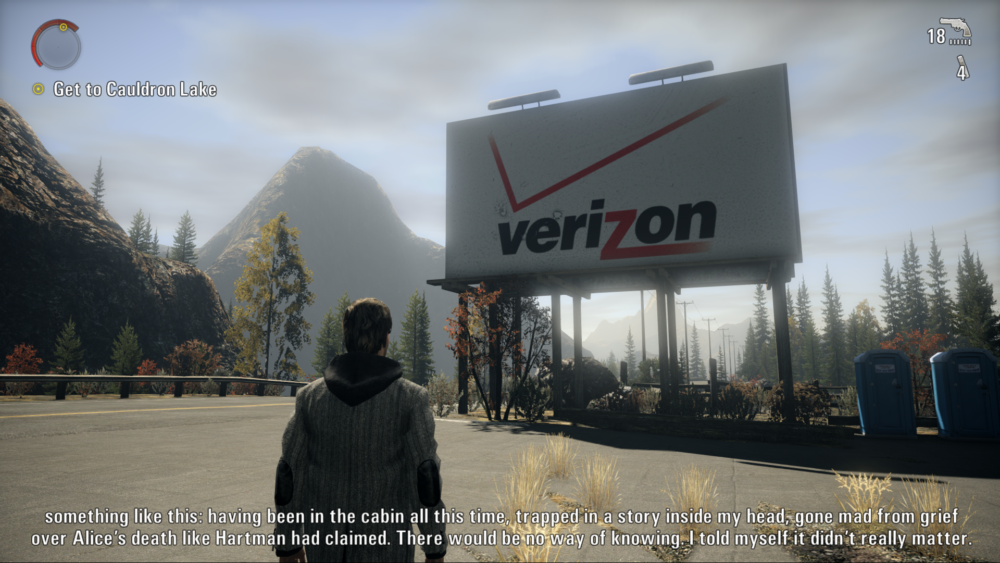

Okay this one isn't actually ARPG Homework I'm just getting caught up on my Remedy homework before Control Resonant. Anyways, Alan Wake is like kind of alright kind of mediocre. It's marred by the fact its gameplay is terrible and that its gameplay structure is incredibly uninteresting. You do a walking simulator (which is good) and are repeatedly stopped by shadow guys appearing in front of and behind you that you then stare at and shoot.
🗑️‼️‼️‼️‼️
And like the walking simulator is good! I like it! The game's at its best when you're going from A to B and interesting things are happening that don't involve shadow people appearing and time slowing down and the camera whipping over to them appearing and the music going "wuwwuwwaaahhhh!!!"
Uhhhhh the writing is like passable for a video game, which is an extremely low bar. I'm saying the writing is genuinely quite bad. And the whoooole gaaaame is about writing, so it's funny that Alan Wake is bad at writing, but like. I can only manage so many "my name is Alan Wake and I'm a writer"s before I wanna turn the game off. It's like. It gets to a point with the dialogue, man. And Alan Wake has a quippy sidekick in Barry and it's maybe the most annoying thing ever. It's textually annoying but it's genuinely annoying, he sucks.
In terms of other things, the game is absolutely drop-dead gorgeous and 2010 has never looked this good. They remastered it for some reason and the remaster looks soooo bad, I have no idea why anyone would play that version. The DLC is actually really good, and the second half of it is better than the entire base game (and not just because Barry isn't there). You have to do this whole platforming section outside of the doctor's lodge and it's a buildup of all the gameplay you've done previously, and it's engaging, and it's actually out-there world-design-wise. Like it's so good. Probably less good than I'm giving it credit for, because it is a breath of fresh air after the mediocrity that is the rest of the game, but in context it feels

I loved the part in Episode 6 where there's a Verizon billboard. That's my cell carrier 🫡
When I really think about it, Alan Wake tries to be anti-doomer/anti-suicide media but it's not very good at doing that. I mean in the final DLC episode, Alan goes "when I finished departure I had given up. I was ready to give in and die" and like I felt that. Soooooo true Mr. Wake, that's IOOD right there. But yeah, uh, when anti-suicide media is bad it kind of wraps around to being pro-suicide. And Alan Wake is about a guy who is unstable and ignores his wife and then storms out in a rage and abandons her in super hell and then he writes himself into super hell to save her and now he's, like, trapped in super hell. And Alan Wake sucks as a person, it's made very clear. And then when he's textually suicidal, a guy in a diving suit appears and goes "don't kill yourself Alan. Your suicidality is actually a doppelgänger." And idk. Maybe Alan Wake is justified in wanting to die!
On to American Nightmare, then. And then finally playing Control's AWE DLC, which will probably be alright, and then Alan Wake 2, which I hope will be very good. I'm skipping Quantum Break, Max Payne, and Max Payne 2 because I don't care about them at all. I've played Control and Alan Wake and everything I disliked about Control were the exact same things I disliked about Alan Wake but in greater measure. So. If this pattern holds... hopefully American Nightmare is slightly less bad Alan Wake.